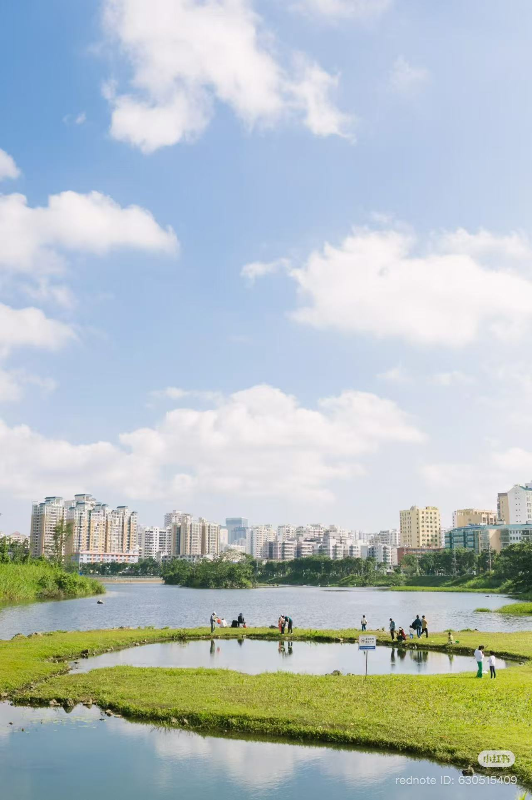
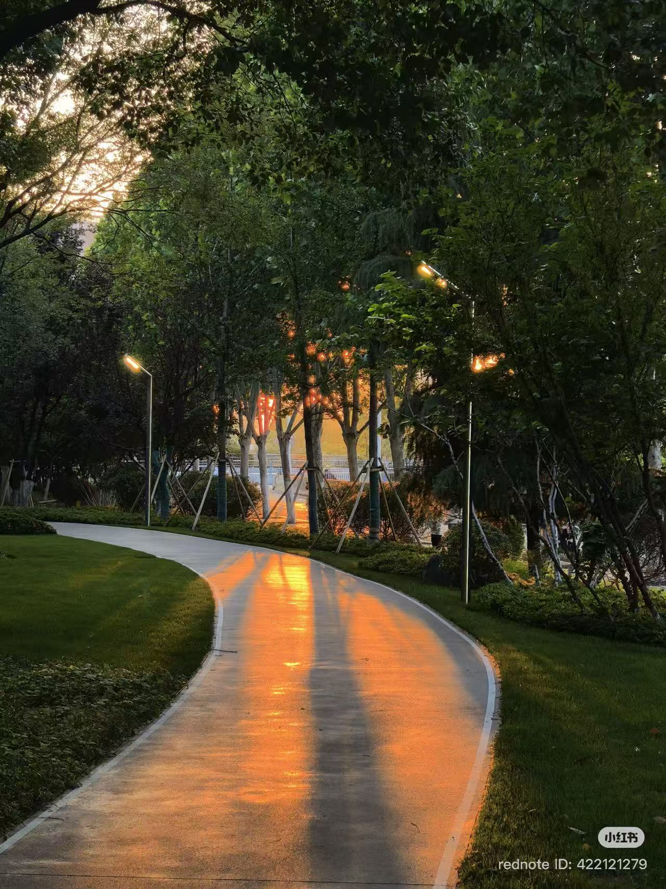
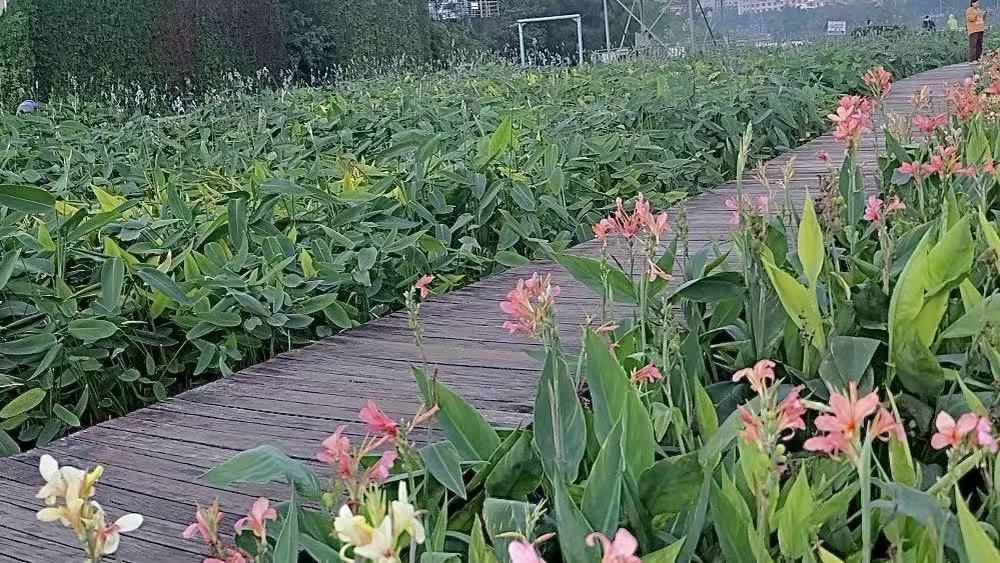

Scenic Attractions
Explore the natural beauty of Jinniuling Park.

Golden Bull Hill
The iconic hill that gives the park its name and provides scenic viewpoints.

Tropical Forest Landscape
Dense tropical vegetation creates a refreshing environment in the city.

Scenic Lake Area
Peaceful lakes offer relaxing views and beautiful reflections.

Sunset Viewing Area
A favorite location for photographers during the evening hours.

Pigeon Square
One of the most recognizable and family-friendly attractions in the park.

Flower Gardens
Seasonal flowers add vibrant colors to the park landscape.